Destinos
Bolivia es un país lleno de maravillas naturales, culturales e históricas. Descubre los destinos más emblemáticos de cada departamento y planifica tu próxima aventura con nosotros.
Bolivia es un país lleno de maravillas naturales, culturales e históricas. Descubre los destinos más emblemáticos de cada departamento y planifica tu próxima aventura con nosotros.
La Paz
La Paz ofrece paisajes únicos, cultura viva y aventuras inolvidables en el corazón de los Andes.

Ciudad de La Paz

Valle de la Luna
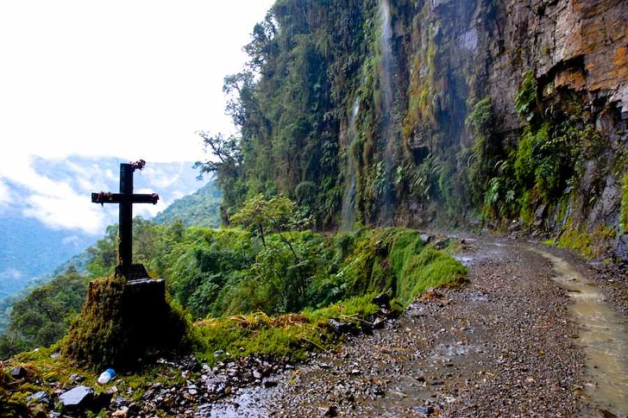
Camino de la Muerte
Cochabamba
Conocida como la ciudad de la eterna primavera, Cochabamba combina naturaleza, historia y gastronomía.
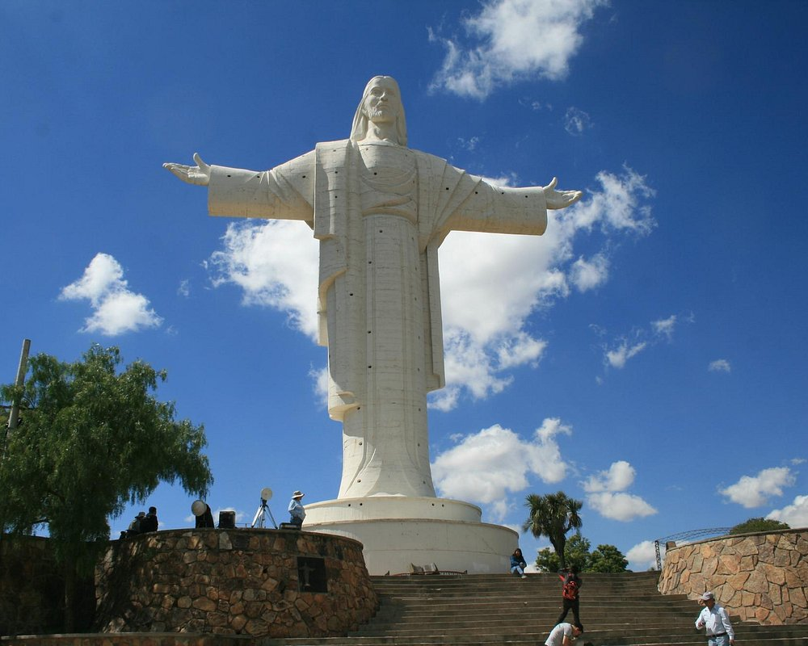
Cochabamba
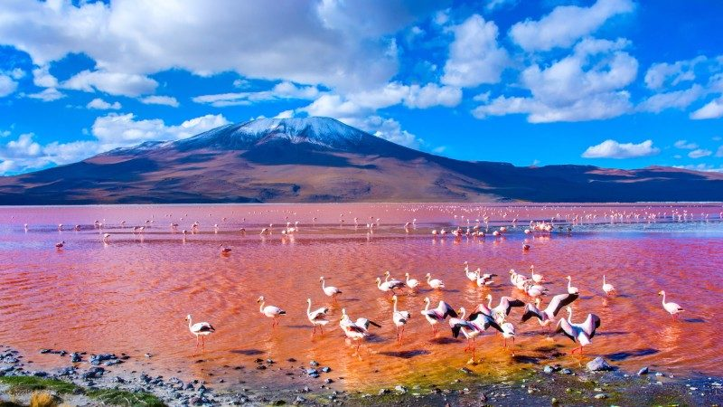
Laguna Chacopata
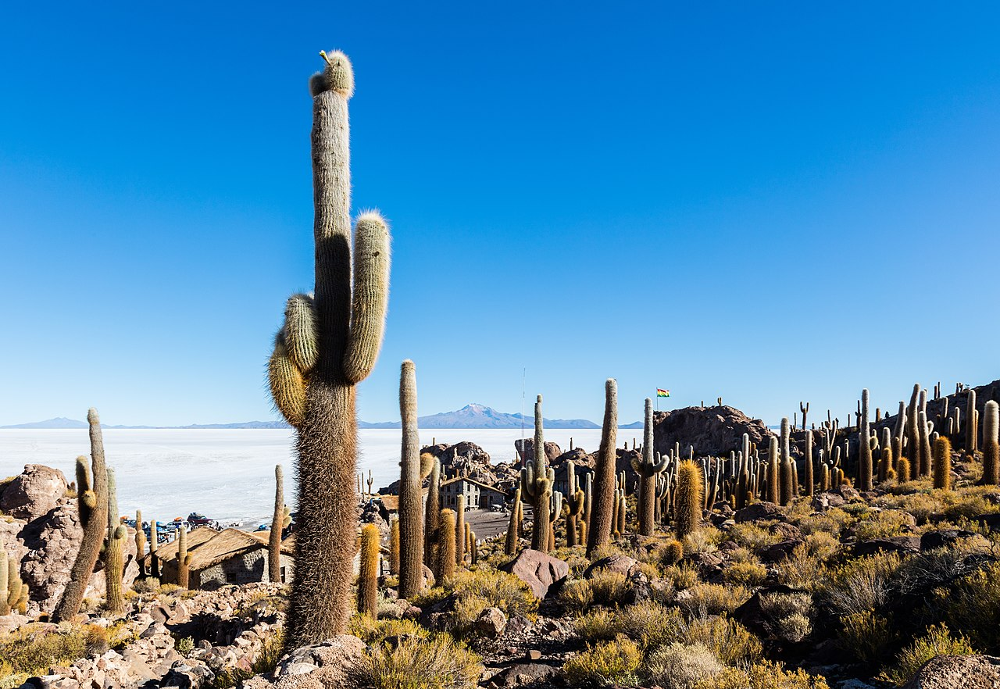
Isla Incahuasi
Oruro
Famosa por su carnaval y paisajes altiplánicos, Oruro es cultura y naturaleza en estado puro.
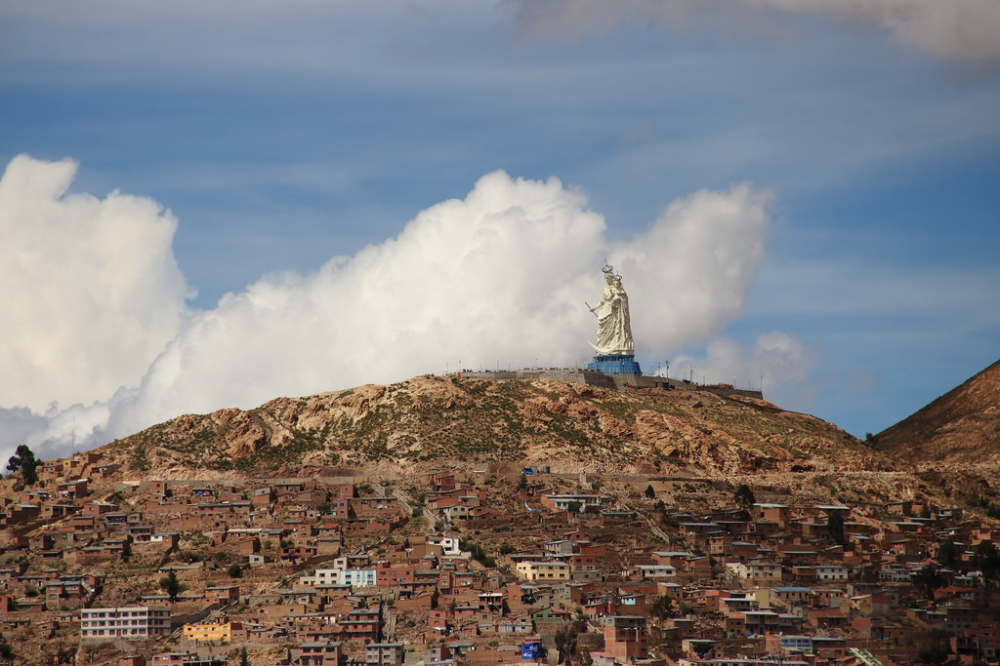
Oruro
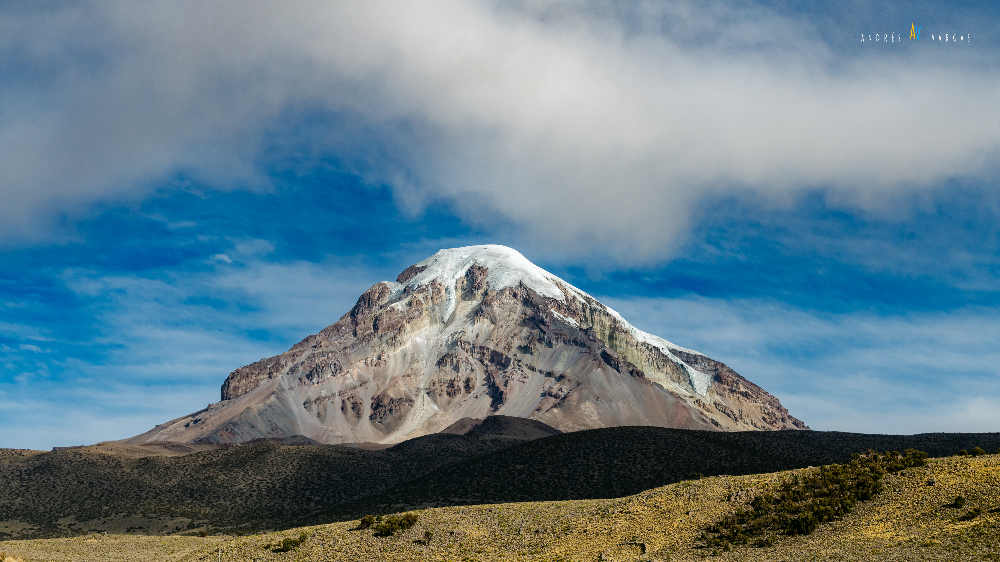
Volcán Sajama
Potosí
Potosí es historia viva de Bolivia, con paisajes y arquitectura colonial únicos.
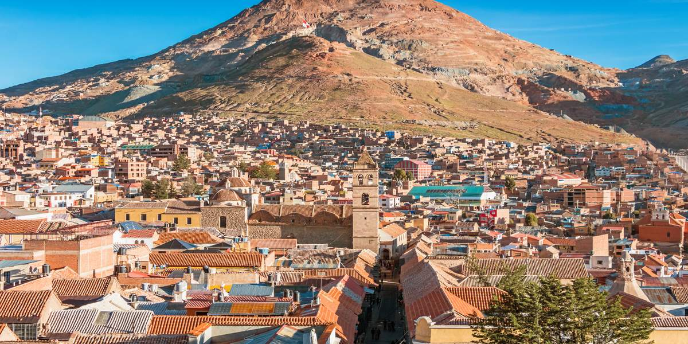
Potosí

Salar de Uyuni
Sucre
La capital constitucional de Bolivia, famosa por su arquitectura colonial y su historia.
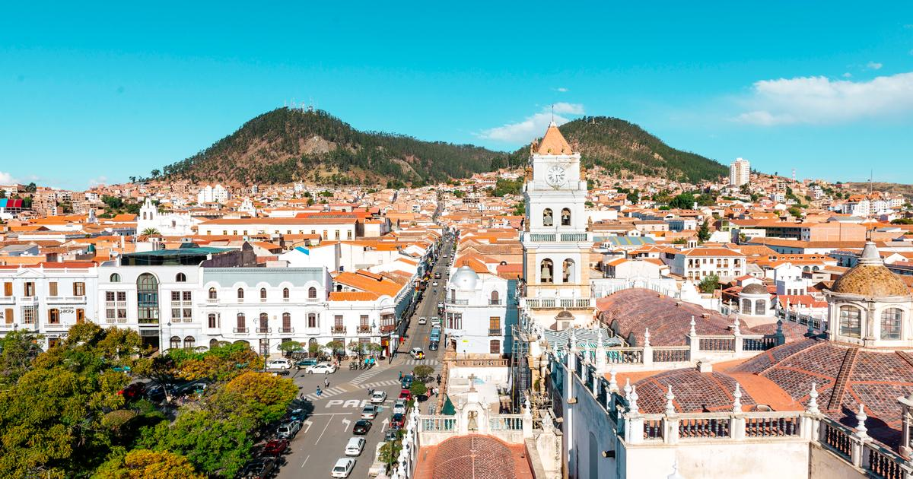
Sucre
Beni
Beni es naturaleza pura, ríos, selva y cultura amazónica. Un destino ideal para el ecoturismo y la aventura.
Laguna Chacopata
Pando
Pando es la puerta de entrada a la Amazonía boliviana, con paisajes selváticos y ríos caudalosos.
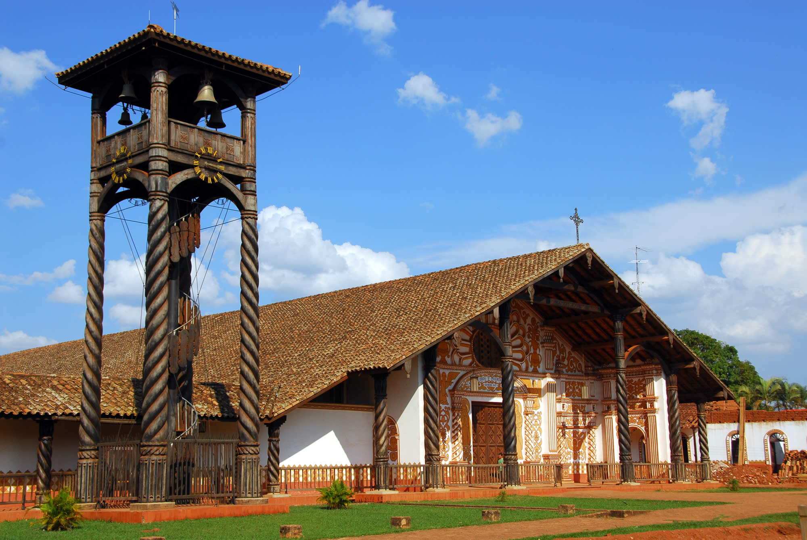
Iglesia Chiquitana
Santa Cruz
Santa Cruz es biodiversidad, cultura y aventura en la región oriental de Bolivia.
Iglesia Chiquitana
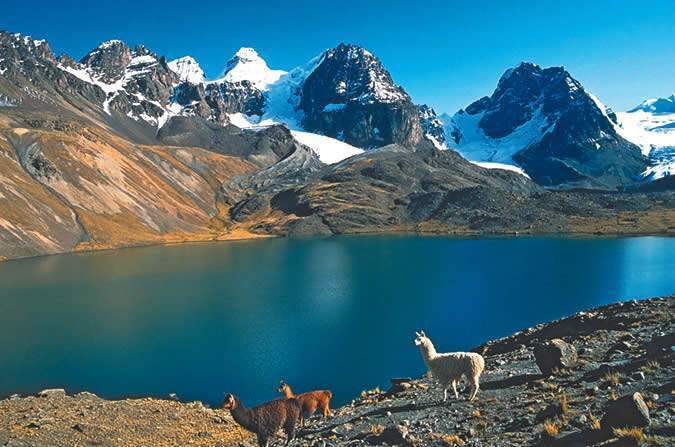
Cordillera Real
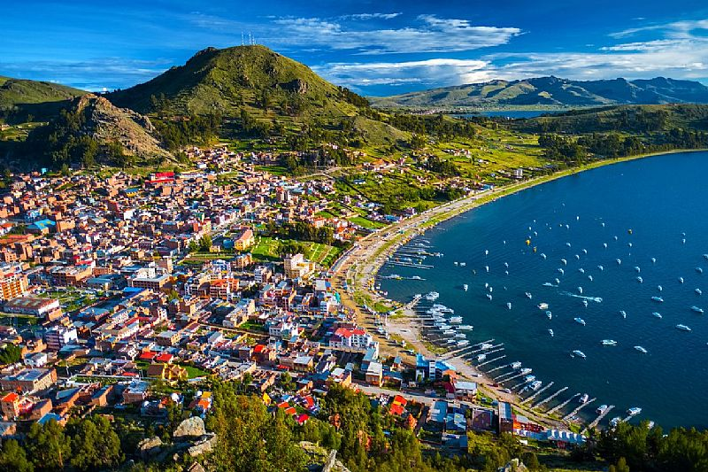